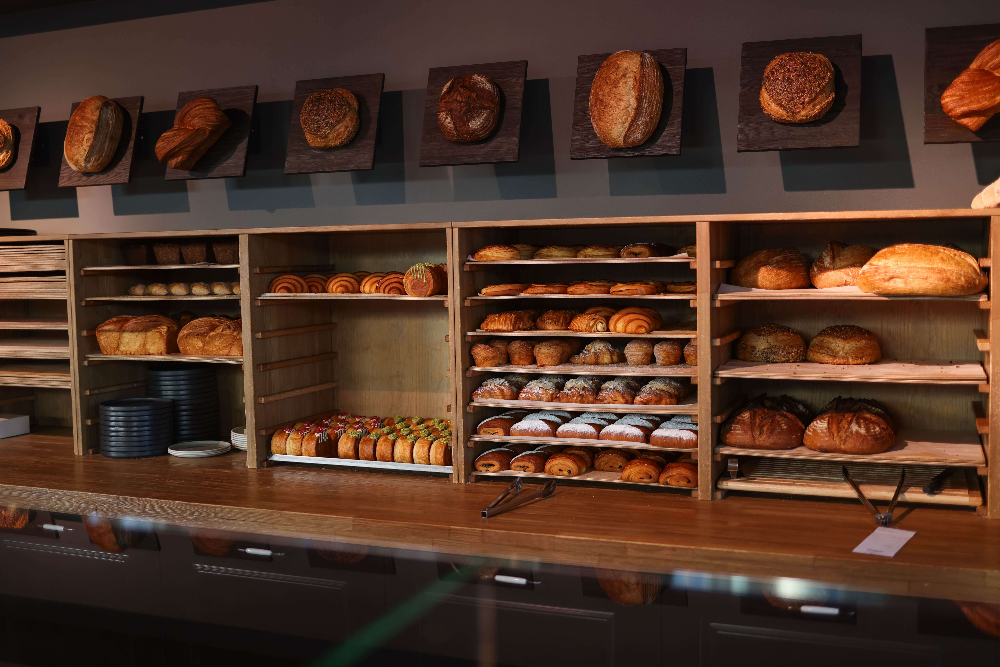
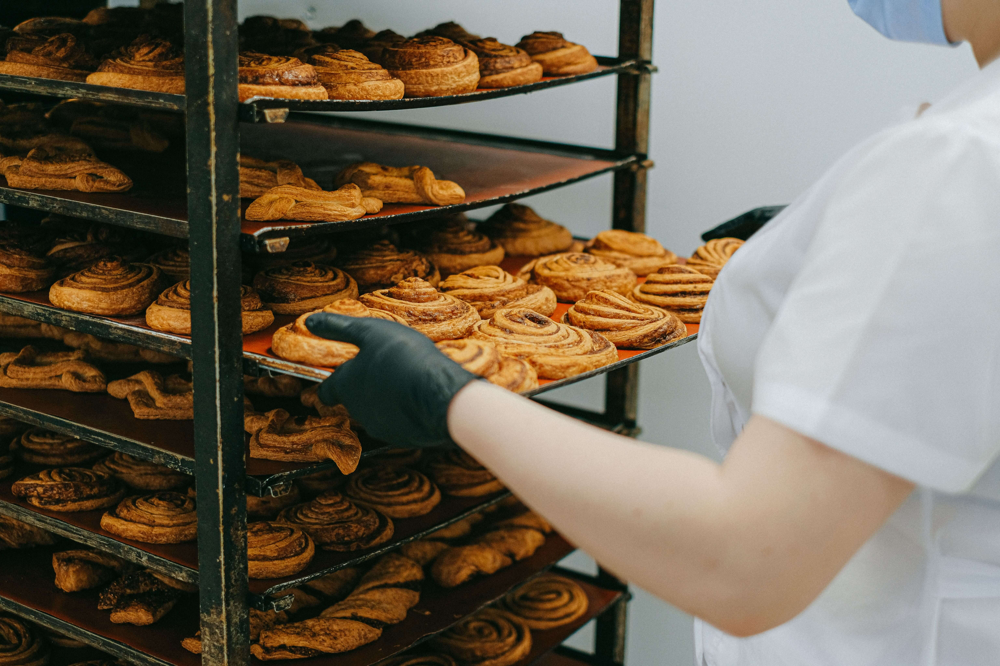
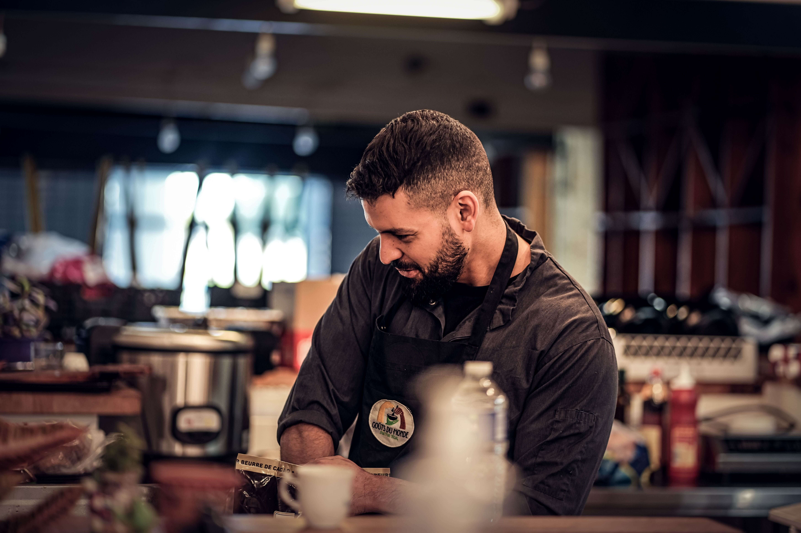

Meet Our Team & History
Our History

Founded in 2015, our journey began with a simple passion: bringing authentic, handcrafted flavors to food lovers. What started as a small family kitchen with just four tables has grown into a beloved culinary destination, built on a foundation of tradition, quality ingredients, and exceptional hospitality.

Over the years, we expanded our menu and modernised our dining experience without ever losing sight of our roots. Today, we take pride in serving hundreds of happy guests daily, offering both a warm dine-in atmosphere and a seamless online ordering service straight to your doorstep.
Meet Our Chef
Chef Nuwan Perera
Executive Chef & Co-Founder
Over 15 years of culinary expertise blending traditional Sri Lankan spices with modern global cooking techniques. Chef Nuwan leads our kitchen with a passion for authentic local flavors.

Chef Koshila Gunawardena
Head Pastry & Dessert Specialist
Specialist in artisan Sri Lankan sweet delicacies and modern fusion desserts. Chef Koshila creates memorable dining finishes using fresh local ingredients and tropical fruits.